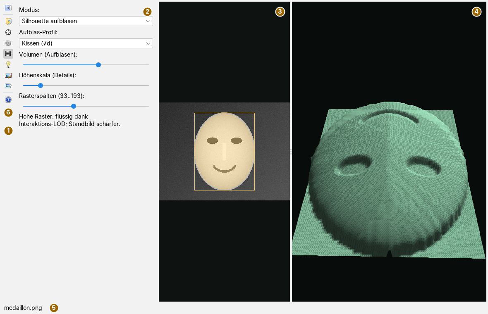
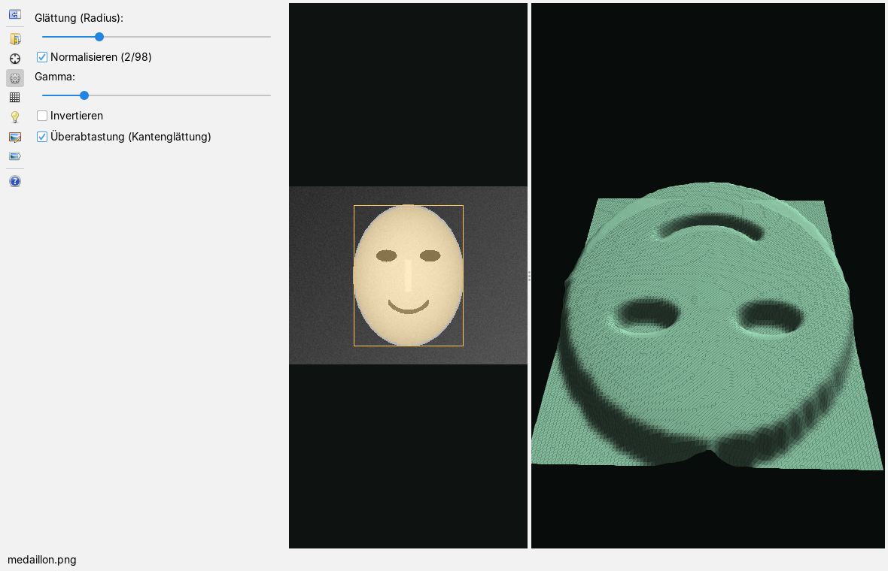
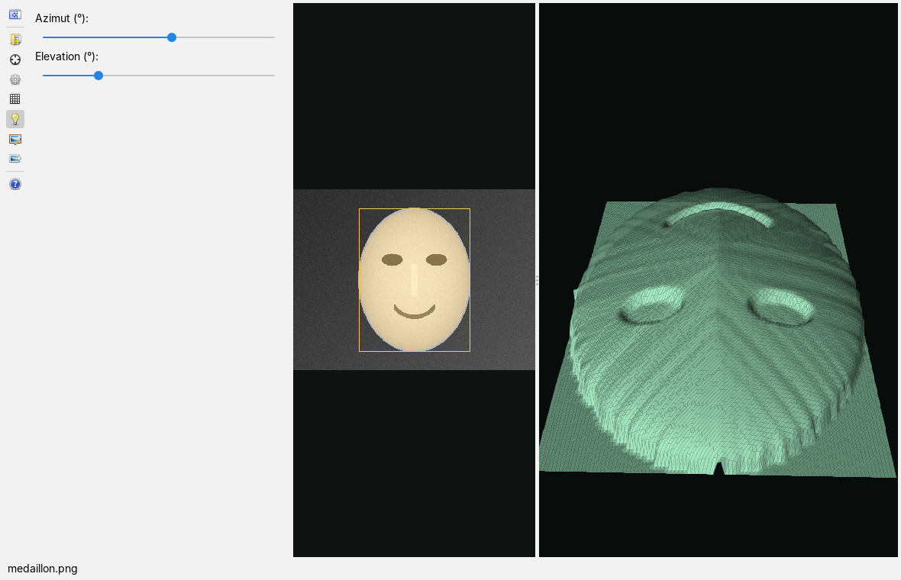
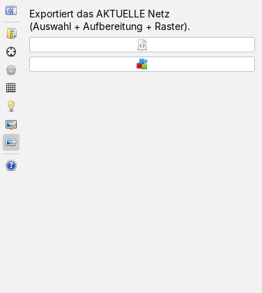

Aus einem Bild ein 3D-Relief machen
Bedienseite, Stand 07.10.2026. Wie man ein Bild lädt, den Teil auswählt, der zum Relief werden soll, die Helligkeit aufbereitet, zwischen Kamee und aufgeblasener Silhouette wählt, das Licht stellt, das Relief dreht und als XML oder OBJ ausgibt. Die Bilder sind Bildschirmfotos der App mit einem frei erfundenen, eigens gezeichneten Eingangsbild: ein helles, gewölbtes Oval mit einem schematischen Gesicht aus Ellipsen und Bögen auf dunklem Verlaufsgrund.
Das Fenster
Die App öffnet man im Menü Anwendungen mit Neue Reliefansicht; ein Tastenkürzel hat sie nicht. Links steht die senkrechte Leiste mit den Karten, daneben die gerade offene Karte, in der Mitte das Bild in Graustufen mit der Auswahl und rechts das Relief in 3D. Es gibt keine Aufklappfenster für Einstellungen; nur zum Öffnen und Speichern von Dateien erscheint der Dateidialog.

Die Trennlinie zwischen Bildfläche und 3D-Ansicht lässt sich verschieben. Die Bildfläche zeigt das Bild als Leuchtdichte nach Rec. 709, eingepasst und ohne Verzerrung; die Auswahl ist gelb umrandet, eine Pixelmaske gelb überlagert. Solange kein Bild geladen ist, steht dort Rail-Seite „Bild“ → Bild öffnen und in der 3D-Ansicht 3D — Orbit: ziehen, Zoom: Mausrad.
Die Leiste
Die Knöpfe tragen nur Symbole; ihr Name steht im Tooltip. Ein Klick öffnet die Karte, ein zweiter Klick auf denselben Knopf schließt den Kartenbereich wieder; es ist immer höchstens eine Karte offen. Die Karten sind 344 Bildpunkte breit.
| Symbol | Tooltip | Was geschieht |
|---|---|---|
| Optionsbereich ein-/ausblenden | Öffnet die erste Karte (Bild), wenn der Bereich zu ist, und schließt ihn, wenn er offen ist. Das Symbol wechselt mit dem Zustand ( = offen). | |
| Bild | Karte Bild: Bild öffnen, Name und Größe. | |
| Auswahl | Karte Auswahl: Auswahlart, Zauberstab, Maskenwerkzeuge. | |
 | Aufbereitung | Karte Aufbereitung: Glättung, Normalisieren, Gamma, Invertieren, Überabtastung. |
 | Relief | Karte Relief: Modus, Profil, Volumen, Höhenskala, Raster. |
| Licht | Karte Licht: Richtung des Lichts. | |
| Porträt | Karte Porträt: Passgitter und Verschiebungsfeld. | |
| Export | Karte Export: Relief als XML oder OBJ speichern. | |
 | Hilfe: Bedienseite in der Doku | Öffnet diese Seite in der Doku-App, wie F1. Die Statuszeile meldet Doku geöffnet und nennt für einen Starter ohne Doku-App die Adresse der Website. |
Ein Bild laden

- Karte Bild öffnen und den Knopf (Bild öffnen…) drücken.
- Im Dateidialog ein Bild wählen; angeboten werden
png,jpg,jpegundbmp. Farbbilder werden in Graustufen umgerechnet. - Die Karte nennt Dateiname und Größe in Bildpunkten, die Statuszeile und der Reitertitel den Dateinamen. Die Auswahl ist danach das ganze Bild, und das Relief erscheint sofort.
Ein Bild, das sich nicht lesen lässt, meldet die Statuszeile mit Fehler beim Laden: Format nicht lesbar; ein vorher geladenes Bild bleibt dann stehen. Das Laden geschieht im Vordergrund: Bei sehr großen Bildern steht die Oberfläche so lange.
Auswählen
Die Auswahl bestimmt, was zum Relief wird; außerhalb liegt die Höhe auf null. Sie ist die eigentliche Arbeit: Das Aufblasen hat wenige Stellschrauben, es kann eine gute Silhouette nicht verderben und eine schlechte nicht retten. Zeit, die man in die Auswahl steckt, ist besser angelegt als jedes Nachstellen danach.
Unter Auswahlmodus: stehen vier Arten:
| Art | Bedienung in der Bildfläche |
|---|---|
| Rechteck | Mit gedrückter Maustaste aufziehen. Ein kurzer Klick (weniger als vier Bildpunkte Weg) setzt die Auswahl auf das ganze Bild zurück. |
| Ellipse | Wie das Rechteck; die Ellipse füllt das aufgezogene Rechteck. |
| Polygon | Jeder Klick setzt einen Punkt, ein Doppelklick schließt das Polygon. Mit weniger als drei Punkten wird es verworfen. Ein Wechsel der Auswahlart verwirft einen halb gesetzten Streckenzug. |
| Zauberstab | Ein Klick wählt von dieser Stelle aus alle zusammenhängenden Bildpunkte, deren Helligkeit höchstens um die Zauberstab-Toleranz: von der Startstelle abweicht (Regler 0,02 bis 0,60, Vorgabe 0,15). Mit Kantenstopp (Sobel) (Vorgabe an) hält das Wachstum zusätzlich an starken Kanten. |
Die Knöpfe der Karte:
| Symbol | Tooltip | Was geschieht |
|---|---|---|
| Auswahl zurücksetzen | Die Auswahl wird das ganze Bild. | |
| Vorschlag (Otsu): automatische Objektmaske, kleinere Helligkeitsklasse | Teilt das Bild an der Otsu-Schwelle in hell und dunkel und nimmt die kleinere Klasse als Objekt. Ergebnis ist eine Pixelmaske. | |
| Aufräumen (Morphologie): Close + Open, größte Komponente, Löcher füllen | Schließt kleine Lücken, entfernt Krümel, behält nur die größte zusammenhängende Fläche und füllt deren Löcher. | |
| Maske invertieren | Kehrt die Pixelmaske um. |
Aufräumen und Invertieren wirken nur auf Pixelmasken aus Zauberstab oder Otsu; bei einem Rechteck, einer Ellipse oder einem Polygon sagt die Statuszeile das. Bei einer Pixelmaske zeigt der gelbe Rahmen ihr umschließendes Rechteck.
Helligkeit aufbereiten

Die Aufbereitung arbeitet auf dem abgetasteten Raster, nicht auf dem ganzen Bild; deshalb folgen alle Regler ohne Wartezeit, gleich wie groß das Bild ist. Die Schritte laufen in dieser Reihenfolge:
- Glättung (Radius): Gaußsche Weichzeichnung mit einem Radius von 0 bis 8 Rasterzellen (0 = aus).
- Normalisieren (2/98) spreizt die Helligkeit so, dass das 2-%-Perzentil auf 0 und das 98-%-Perzentil auf 1 kommt; was darüber oder darunter liegt, wird abgeschnitten.
- Gamma: von 0,3 bis 3,0 (Vorgabe 1). Unter 1 hebt es die dunklen Töne an, über 1 senkt es sie.
- Invertieren dreht hell und dunkel um: Dunkles steht dann vorn.
Überabtastung (Kantenglättung) (Vorgabe an) tastet auf einem Raster doppelter Dichte ab und mittelt je Punkt über die 3 × 3 Nachbarn. Das unterdrückt Moiré, wenn das Bild feine Raster enthält. Die Rasterpunkte außerhalb der Auswahl gehen dabei mit der Höhe null ein.
Relief formen
Die Karte Relief (Bild oben im Abschnitt Fenster) legt fest, woher die Höhe kommt.
| Modus | Höhe | wofür |
|---|---|---|
| Kamee (flach) | aufbereitete Helligkeit mal Höhenskala (Details): | Vorlagen, deren Helligkeit wirklich Höhe meint: Zeichnungen, Prägungen, Höhenbilder. |
| Silhouette aufblasen | Profil des Randabstands mal Volumen (Aufblasen):, dazu die Helligkeit mal Höhenskala (Details): | Fotos: Der Körper kommt aus dem Umriss, die Helligkeit trägt nur Feinheiten bei. |
Beim Aufblasen zählt für jede Rasterzelle der Abstand zum Rand der Auswahl; je weiter innen, desto höher. Aufblas-Profil: formt den Verlauf:
| Profil | Verlauf | Wirkung |
|---|---|---|
| Kissen (√d) | Wurzel des Randabstands | prall, steil am Rand und rund oben |
| Kegel (d) | linear | gratbetont, ein First über der Mittelachse |
| Plateau | weicher Anstieg in den äußeren 35 % des Randabstands, danach eben | flach oben, mit runder Kante |
Die Regler: Volumen 0 bis 150 (Vorgabe 70), Höhenskala 5 bis 150 (Vorgabe 60), beide in Welteinheiten bei einer Reliefbreite von 460. Rasterspalten (33..193): (Vorgabe 97) bestimmt die Feinheit; die Zahl der Zeilen folgt aus dem Seitenverhältnis der Auswahl, damit die Zellen quadratisch bleiben. Das Raster wird erst beim Loslassen des Reglers neu gebaut, alle anderen Regler wirken sofort.
Helligkeit ist Beleuchtung, nicht Tiefe. Ein Bildpunkt trägt die Farbe der Oberfläche, ihre Neigung zum Licht, Stärke und Richtung des Lichts, Verschattung und die Belichtung der Kamera – die Tiefe steht nicht in dieser Liste. Im Kamee-Modus werden deshalb die dunklen Augen des Beispiels zu Löchern (Bild im Abschnitt Bild). Beim Aufblasen geht die Helligkeit nur über die Höhenskala ein; mit einer kleinen Höhenskala bleibt der Körper ein Körper.
Licht und Ansicht

Die Karte Licht stellt die Richtung einer fernen Lichtquelle: Azimut (°): 0 bis 360 (Vorgabe 40) und Elevation (°): 10 bis 85 (Vorgabe 46). Die Schattierung folgt sofort; Schlagschatten wirft das Relief nicht.
In der 3D-Ansicht dreht Ziehen mit der Maus das Relief: waagrecht um die Hochachse, senkrecht die Neigung, die zwischen 8° und 80° bleibt, damit man nie von unten auf die Fläche sieht. Das Mausrad fährt heran und zurück. Während des Ziehens zeichnet die App ein Netz halber Auflösung und beim Loslassen wieder das volle, damit auch feine Raster flüssig drehen.
Porträt und Verschiebungsfeld

Für Gesichtsbilder schreibt die App ein Verschiebungsfeld, das das Gesichtsgitter einer anderen App des Rahmens aufnimmt:
- Auf der Karte Auswahl den Modus Ellipse wählen und die Ellipse über das Gesicht ziehen.
- Karte Porträt öffnen. Mit (t,φ)-Gitter einblenden (Vorgabe an) liegt das Passgitter über der Ellipse; die Augen sollten auf der hervorgehobenen Augenlinie liegen.
- Amplitude (Welteinheiten): 1 bis 12 (Vorgabe 4) und Glättung: 0 bis 4 (Vorgabe 1) einstellen.
- Den Knopf drücken und im Speicherdialog bestätigen; der Dialog schlägt den Dateinamen vor, den die Gesichtsdarstellung erwartet.
Das Feld hat 39 × 27 Werte über die ganze Ellipse, quer bis 75° nach jeder Seite, und ist um seinen Mittelwert bereinigt. Ohne Ellipsenauswahl meldet die Statuszeile, dass eine Ellipse gebraucht wird, und es wird nichts geschrieben. Die Werte von Amplitude und Glättung wirken nur auf das Feld, nicht auf das Relief in der 3D-Ansicht.
Ausgeben

| Symbol | Tooltip | Was geschieht |
|---|---|---|
 | XML-Mesh exportieren… | Speichert das Netz als Relief-XML mit Versionsangabe: Eckpunkte, Normalen und Dreiecke. |
| OBJ exportieren… | Speichert das Netz als Wavefront-OBJ mit Eckpunkten, Normalen und Flächen, zum Weiterverarbeiten in 3D-Werkzeugen oder für den 3D-Druck. |
Ausgegeben wird das aktuelle Netz in voller Auflösung, also Auswahl, Aufbereitung, Modus und Raster, wie sie gerade eingestellt sind. Fehlt die Endung .xml oder .obj, hängt die App sie an. Die Statuszeile nennt danach die Datei, die Zahl der Eckpunkte und der Dreiecke; ohne geladenes Bild sagt sie Kein Netz — erst Bild laden. Einlesen kann die App keine der beiden Dateien; sie sind Ausgaben, kein Arbeitsstand.
Was gespeichert wird
Beim Sichern des Arbeitsbereichs merkt sich die App den Pfad des Bildes, die Auswahl (Art, umschließendes Rechteck, die Punkte eines Polygons und eine Pixelmaske lauflängenkodiert) und alle Regler und Schalter der Karten Aufbereitung, Relief, Licht und Porträt. Beim nächsten Start lädt sie das Bild wieder und stellt alles her. Auswahlmodus, Zauberstab-Toleranz und Kantenstopp werden nicht gesichert. Eine sehr feine Pixelmaske (Kodierung länger als 60 000 Zeichen) wird nicht gesichert; dann gilt nach dem Start das umschließende Rechteck. Fehlt das Bild, bleibt die Ansicht leer. Nicht gesichert werden der Blickwinkel der 3D-Ansicht und die offene Karte.
Tastatur und Maus
Die Bildfläche bedient man mit der Maus (Aufziehen, Klicken, Doppelklick, siehe Auswählen), die 3D-Ansicht mit Ziehen und Mausrad. F1 öffnet diese Seite in der Doku-App; eigene Tastenkürzel hat die App nicht.
Grenzen
- Das Ergebnis ist ein Relief, kein Modell: Es hat eine Vorderseite und keine Rückseite, und die Tiefenverhältnisse stimmen nicht mit dem Original überein. Für ein Medaillon oder eine Prägung reicht das, für eine Vermessung nicht.
- Die 3D-Ansicht zeigt das Relief derzeit spiegelverkehrt: Die Oberkante des Bildes liegt vorn, links bleibt links. Die Ausgaben als XML und OBJ sind davon nicht betroffen.
- Die Regler zeigen ihren Wert nicht als Zahl an.
- Bilder werden im Vordergrund geladen; bei sehr großen Bildern steht die Oberfläche so lange.
- Ein Verfahren, das Tiefe aus der Schattierung schätzt, fehlt bewusst, ebenso eine Grundform, auf die das Bild nur als Feinstruktur aufgetragen wird; das Porträtfeld ist bisher der einzige Weg dieser Art.
Was die App kann und worauf sie aufbaut, steht in der Übersicht.